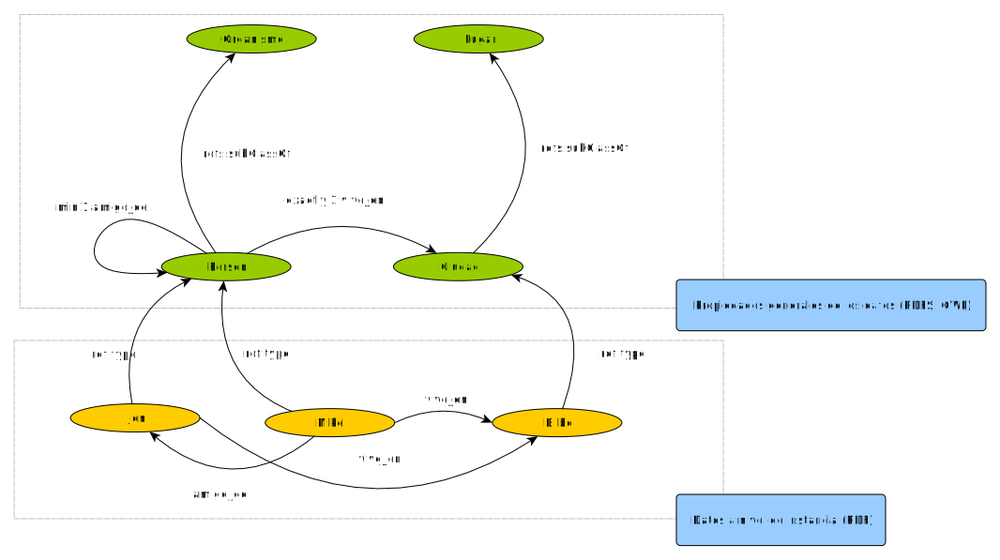

RDF
Mikel Egaña Aranguren
mikel-egana-aranguren.github.io

Mikel Egaña Aranguren
Mikel Egaña Aranguren
mikel-egana-aranguren.github.io
https://github.com/mikel-egana-aranguren/ABD

Proyecto utópico para una nueva World Wide Web: cada recurso publica sus datos y los agentes inteligentes los consumen de manera autónoma
Se ha implementado parcialmente (Ej. JSON-LD + Schema: Google Knowledge Graph)
LLMs?
Stack de tecnologías:
RDF: Resource Description Framework
Estándar oficial del W3C para representar recursos en la web
Actualmente su uso está creciendo en el entorno empresarial para representar datos en Knowledge Graphs (KGs) para implementar arquitecturas centradas en datos
Todas las entidades del grafo se identifican mediante URIs
URI: Uniform Resource Identifier (≠ URL!). Identifica recursos: http://www.wikidata.org/entity/Q8692
URL: Uniform Resource Locator. Una URI que indica la localización física de un documento (Que describe a un recurso) en la red: https://www.wikidata.org/wiki/Q8692
Los sujetos y predicados sólo pueden ser recursos (URIs)
Algunos objetos pueden ser valores literales (Cadenas de caracteres)
Los valores literales pueden tener tipo (XML Schema datatypes)
RDF es un modelo de datos
Ese modelo abstracto se puede representar con diferentes sintaxis: "Serializar" (escribir) en un archivo
Una de esas sintaxis es RDF/XML
No confundir el modelo con la sintaxis: ¡RDF es mucho más que un archivo XML!
RDF/XML (http://www.w3.org/TR/rdf-syntax-grammar/)
RDFa (http://www.w3.org/TR/rdfa-core/)
Turtle (http://www.w3.org/TR/turtle/)
N3 (http://www.w3.org/DesignIssues/Notation3.html)
JSON-LD (https://www.w3.org/TR/json-ld11/)


http://www.w3.org/RDF/Validator/
RDF es un estándar del W3C (=HTML, !=SQL), dado un archivo RDF:
Las Triple Stores surgieron cuando internet ya existía (NoSQL!):
Agrupar triples en una "bolsa" identificada por una URI (Diferente de los datos): Named Graphs
Dependiente de implementación: todas las Triple Stores tienen un Default Graph que contiene todos los triples
[Ejecutar ejemplo]
[Ejecutar ejemplo]
Datos y metadatos en el mismo lenguaje (NoSQL! RDF!)
Datos y metadatos en el mismo lenguaje (NoSQL! RDF!)
Default Graph
[Ejecutar ejemplos]
Predicado rdf:type: Agrupar recursos en clases
[Ejecutar ejemplo - Class hierarchy]
Definen el lenguaje mismo
RDF: http://www.w3.org/1999/02/22-rdf-syntax-ns# (Ej. rdf:type = http://www.w3.org/1999/02/22-rdf-syntax-ns#type), definido por RDF (Se define a si mismo), RDFS y OWL
RDFS: http://www.w3.org/2000/01/rdf-schema# definido por RDF, RDFS (Se define a si mismo) y OWL
Definen el lenguaje mismo
SHACL: https://www.w3.org/ns/shacl.ttl definido por RDF, RDFS y OWL
OWL: http://www.w3.org/2002/07/owl# definido por RDF, RDFS y OWL (Se define a si mismo)
Describen un dominio concreto de la realidad: comercio, genes, geografia, instituciones, ...
Definen propiedades generales de los datos que queremos publicar
foaf:person, dbpedia-ont:city, dc:book, schema:person, ...
RDF: datos específicos (Mikel, Jon, Bilbo, ...)
Ontologías (RDFS, OWL): propiedades generales de esos datos (Persona, Ciudad, ...)
